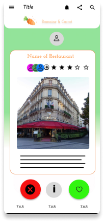

i care about creating delightful, functional, human-centered designs and experiences. i’m currently based in san diego, ca, but always looking for my next experience.
would you like to create together?
yphengdy@gmail.comLinkedIn
Romaine Calm & Carrot On
creating a personalized experience for users seeking restaurants when travelling abroad.
redesigning an unemployment website for the state of new mexico.
thank you for your interest. you can find a download to my resume right here.
hello, my name is diane. in my free time i enjoy baking the best matcha cookies ever, drawing people,
losing to my friends in video games, and caring for my elder pup. i’ve always had a liking for web design
and digital art as an adolescent, which brought me into the ux/ui world. now, i am very excited to learn
about and create experiences for others!
thank you for reading, i’m so glad you’re here.